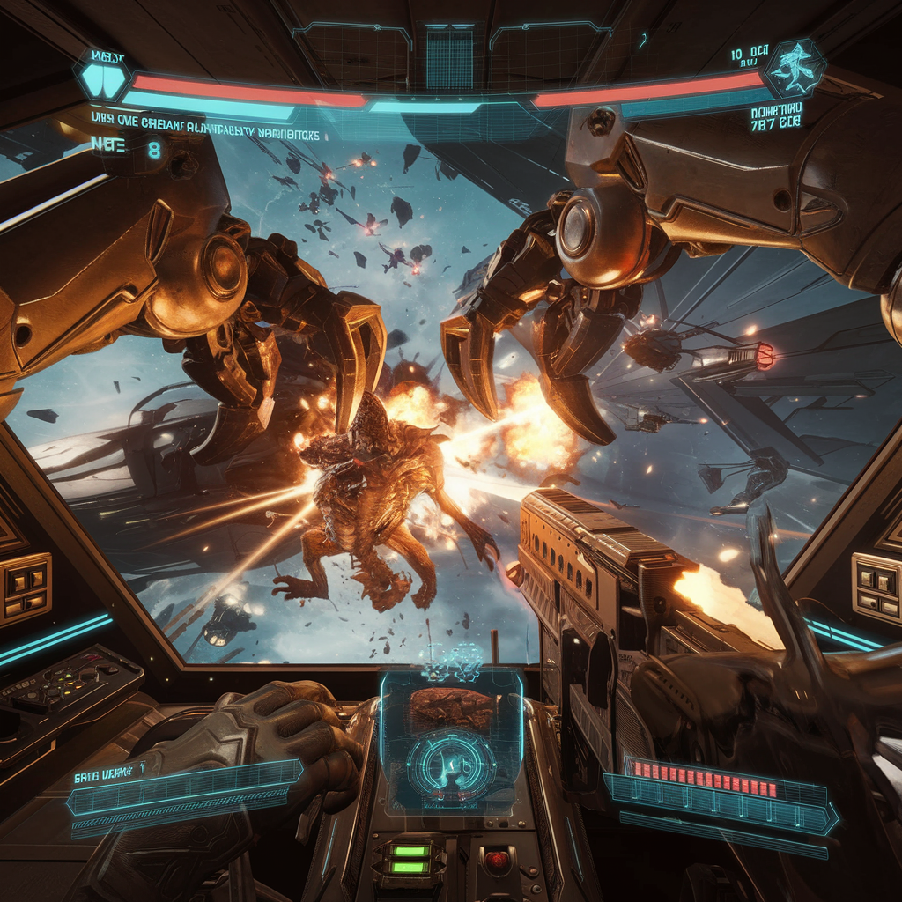

A VR Arcade Mech Shooter with Giant Claw Combat
A VR Arcade Mech Shooter with Giant Claw Combat
Concept Overview
The galaxy is under siege. As the last surviving dreadnought-class war machine, you are humanity’s final line of defense. Players step into the cockpit of a massive, battle-worn mech stationed in orbit around a dying planet, facing wave after wave of monstrous alien invaders.
The core gameplay revolves around full-body, intuitive mech control—where your real-world arm movements translate into colossal mechanical arms that reach out into space. With crane-like robotic claws and integrated weaponry, players must punch, grab, throw, crush, and blast their way through the unrelenting enemy horde.
Core Mechanics
1: Giant Claw Combat – Reach, Grab, and Destroy
-
The dreadnought’s turret sports two massive robotic arms, each ending in articulated claws.
-
1:10 Movement Ratio – Every 10 cm of real-world movement translates into 1 meter of claw movement, giving a sense of immense scale and power.
-
Players can grab, rip apart, and throw enemies or objects into the void of space.
-
The claws can also be used to grab debris and use it as shields or weapons.
-
Physics-based destruction lets players slam enemies into each other or send them flying into space.
2: Integrated Weaponry – Shoot Like You Punch
-
Weapons are mounted onto the arms and claws, meaning players naturally aim by moving their arms.
-
Gun modes include:
-
Auto-Cannons – Rapid-fire machine guns for precise long-range shots.
-
Plasma Burst – Charge up energy blasts by squeezing the claw shut before releasing.
-
Missile Claws – Grab and launch guided missiles by throwing them like a baseball.
-
Ion Blades – Energy sabers extend from the claws for close-quarters melee attacks.
-
3: Movement & Positioning – The Dreadnought Is Your Body
-
The dreadnought itself is stationary in space, but players can maneuver within their cockpit, reaching different control panels to activate systems.
-
Players can rotate the turret to face different angles, dynamically shifting their battlefield.
-
Boost Dodge – Quick thruster bursts allow players to evade attacks and reposition rapidly.
4: Power Management – Adapt or Die
-
The dreadnought runs on a limited power supply, requiring players to balance energy between shields, weapons, and movement.
-
If energy depletes, systems temporarily shut down, forcing players to fight creatively with manual claw combat.
-
Players can reroute energy to overcharge certain systems, such as boosting fire rate or increasing grab strength.
5: Dynamic Enemy Waves – The War Never Ends
-
The alien invasion consists of multiple enemy types, each requiring different tactics:
-
Swarm Drones – Fast, disposable enemies that overwhelm in numbers.
-
Titan Brutes – Heavily armored behemoths that require precise weak-point targeting or claw-based grappling.
-
Leech Mines – Explosive parasites that latch onto the dreadnought and must be physically ripped off and thrown away.
-
Void Reapers – Agile enemies that teleport and disrupt your systems, forcing rapid adaptation.
-
-
Each wave introduces new enemy combinations, demanding quick reflexes and creative problem-solving.

Additional Features & Ideas
Co-Op Mode – Double the Chaos
-
Two players pilot the dreadnought together, each controlling one arm.
-
Coordination is key—one player could focus on grabbing and throwing, while the other provides covering fire.
Salvage & Upgrades – Customize Your Mech
-
Destroyed enemies drop salvage, allowing players to upgrade their claws, weapons, and shields between waves.
-
Unique mods could include:
-
Magnetized Claws – Pull in enemies or weapons from a distance.
-
Gravity Well Launcher – Creates a black hole effect, sucking in smaller foes.
-
Railgun Fingers – Convert your claws into deadly precision weapons.
-
Boss Battles – Colossal Enemies for Colossal Mechs
-
Every few waves, massive boss creatures emerge, requiring players to physically climb onto their bodies and dismantle them piece by piece.
-
One boss might have multiple limbs that need to be torn off, while another requires redirecting its attacks into environmental hazards.
Why This Game Rocks (and Wobbles!)
✅ Full-body, immersive combat – Move your arms, grab enemies, and aim instinctively. ✅ Tactile destruction – Everything can be ripped apart, thrown, or weaponized. ✅ Dynamic power management – Players must adapt and prioritize during combat. ✅ Giant-space-mech-fight fantasy – Who doesn’t want to punch an alien with a 50-meter robotic arm?!
DREADNOUGHT LAST STAND is an arcade-style VR experience that delivers visceral, satisfying giant mech combat with fully interactive, physics-driven gameplay. Whether you’re throwing enemies into space, catching missiles with your claws, or carving through waves of alien horrors, this is a game designed to make you feel like an unstoppable war machine—until you’re not.
Prepare for battle. The last dreadnought stands… but for how long?